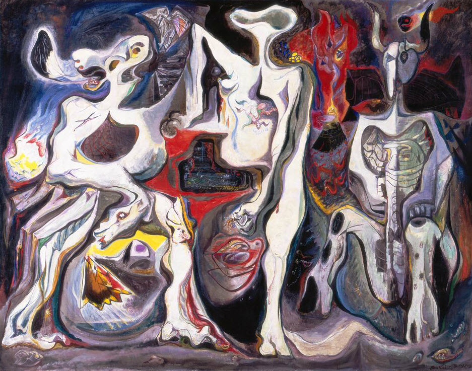
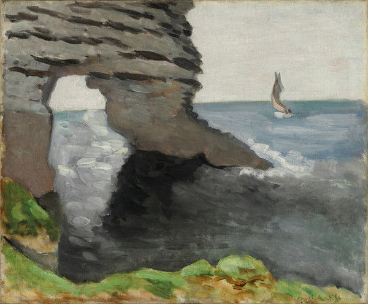
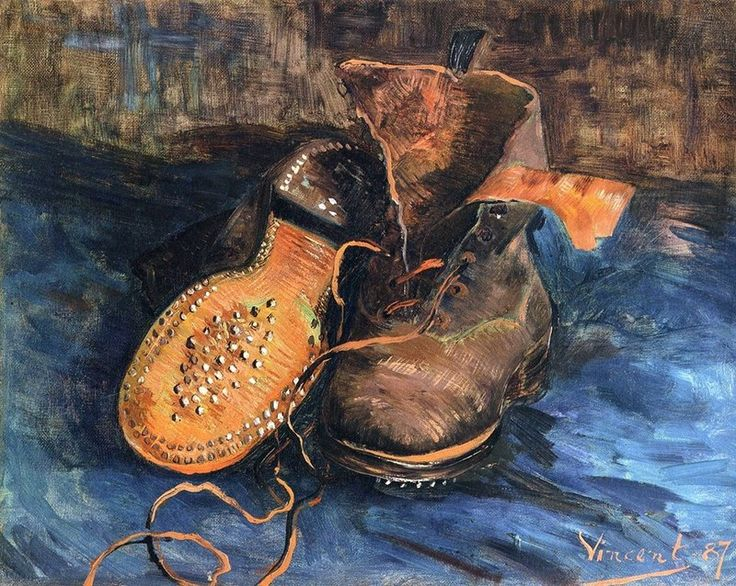

The Baltimore Museum of Art.
Share this Post2017 August,
I am shocked that it took me this long to write about this wonderful museum. Maybe it seemed to commonplace, because I lived a short ten minute walk from it for nine months. "You don't know what's good until it's gone," and now, in my summertime away from Hopkins, that statement hits the nail on the head. I definitely appreciated having the museum so close; it made for a few impromptu trips dedicated to getting our minds off of courses and looming exams. (free admission didn't hurt either)
1 / 7

There is No Finished World — André Masson
2 / 7
Head of Picador with Broken Nose — Pablo Picasso
3 / 7

Artist in Greenland — Rockwell Kent
4 / 7
A Wild Scene — Thomas Cole
5 / 7
St. Michael and Satan — Benjamin West
6 / 7

Pierced Rock — Claude Monet
7 / 7

A Pair of Boots — Vincent van Gogh
Seeing these pieces brought you into a new world. I often found that time would move very slowly when you're in a place like this but in a good way — in a way that made you think about the message, style, and rigor of each piece so deeply that a few hours felt like the whole day. In a word it was meditative. It's one of those moments that makes you excited, proud, and motivated to be a part of humankind, like the first time you take off on an airplane, the first time you connect to the internet (even if it was dial-up), or the first time you see an ungodly large work of architecture.
Anyways, please enjoy some of my favorite pieces from my multiple visits.
- Back to All Posts
Back to All Posts